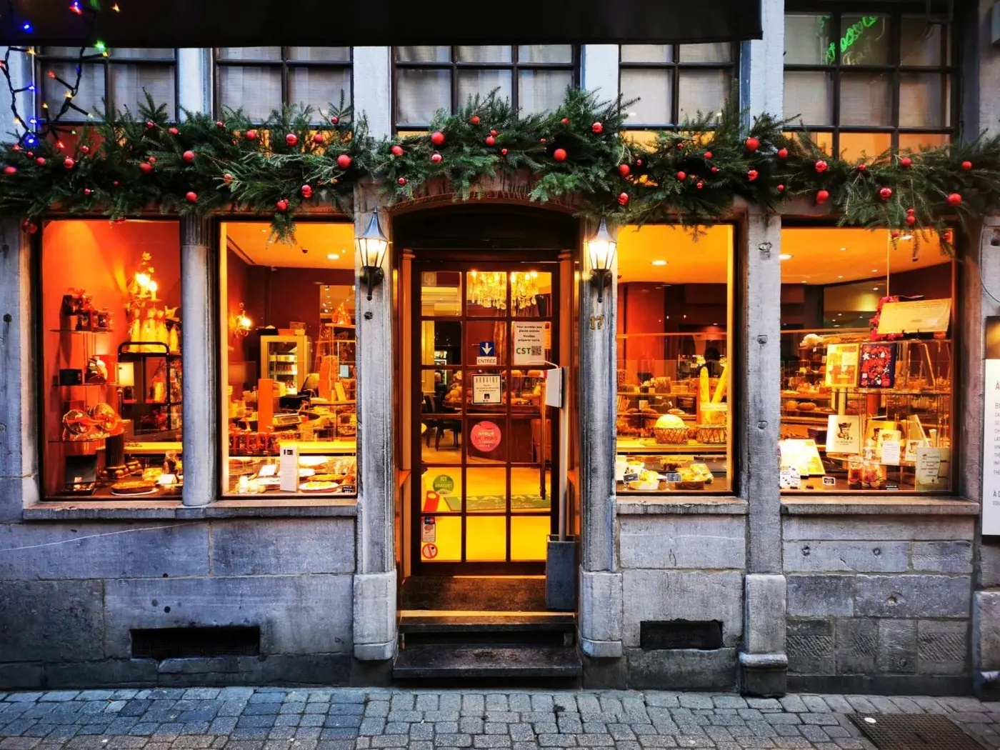

La Maison des Desserts
Carte
Galerie
Contact
Boutique en ligne
Pâtisserie artisanale au cœur de Namur
Salon de thé, boulangerie et chocolaterie, rue Haute Marcelle depuis 1993.
Voir la carte
Commander en ligne

La façade de la maison